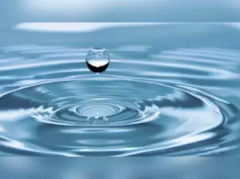
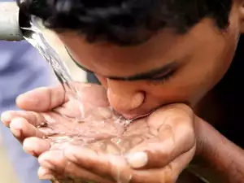

TVS Motor's social arm lines up Rs 10 crore investments towards water conservation.
Published March 20, 2023
Srinivasan Services Trust, the social arm of automobile major TVS Motor Company and auto-component maker Sundaram-Clayton Ltd, has invested more than Rs 21 crore over the last six years towards water conservation efforts in Tamil Nadu and Maharashtra, the company said on Thursday. Srinivasan Services Trust has also planned to invest over Rs 10 crore in the next three years for water conservation initiatives, the company said..
ITC to reduce 40% of its water consumption by 2030
Published April 08, 2023
ITC has introduced demand and supply side water management initiatives that have led to the creation of water storage capacity of over 46.9 million cubic meters and improvement in groundwater tables by 20-30% in the project areas. The company aims to achieve a 40% reduction in water consumption by 2030 compared to the baseline of 2018-19. Its large-scale integrated watershed development project has covered 1.4 million acres in 48 districts across 16 states..
26% of world lacks clean drinking water, 46% sanitation: UN
Published 13 March 2023
The U.N. World Water Development Report 2023 painted a stark picture of the huge gap that needs to be filled to meet U.N. goals to ensure all people have access to clean water and sanitation by 2030. Richard Connor, editor-in-chief of the report, told a news conference that the estimated cost of meeting the goals is somewhere between $600 billion and $1 trillion a year.